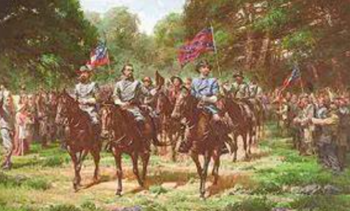

December 7, 1862 – American Civil War
The Battle of Hartsville was a surprise attack during the American Civil War in northern Tennessee. It took place on December 7, 1862, and resulted in a Confederate victory. Confederate Colonel John Hunt Morgan led his cavalry in a swift and stealthy assault against a Union brigade commanded by Colonel Absalom B. Moore.
The battle occurred near the town of Hartsville, Tennessee, on the northern bank of the Cumberland River. The Union camp was positioned close to the river, while Confederate forces emerged from the wooded hills in the early morning to launch their attack.
Confederate: Colonel John Hunt Morgan – cavalry commander known for raids behind Union lines.
Union: Colonel Absalom B. Moore – led the 39th Brigade of the Army of the Ohio.
The battle was a confederate victory. When going home, the Confederates were celebrated by the locals and carried much-needed guns and supplies. The president of the Confederacy, Jefferson Davis, gave John Morgan a promotion. The cavalry raid was so successful that it was named one of the best cavalry raids in history by southern and northern generals alike, and the event was celebrated throughout the Confederacy. Over 1,800 union troops were captured; a crushing defeat. The confederates, on the other hand, had only about 100-150 casualties. Catching the Union by suprise was the ultimate factor that ensured Confederate victory. Confderate general John Morgan became infamous and gained lots of experience from this raid.
 alt="Confederate cavalry walking along a trial after the battle.">However, compared to the other battles in the civil war, this battle was rather small and insignificant. The main impact of this battle was the impact on confederate morale. Union forces recaptured the lost territories mere days later. The battle was in a way a "hit and run", as the win did not bring anything to the Confederate table. The entire ordeal didn't even last long either. The battle lasted 90 minutes, and the only reason why the Confederates won was because the battle was a suprise attack.